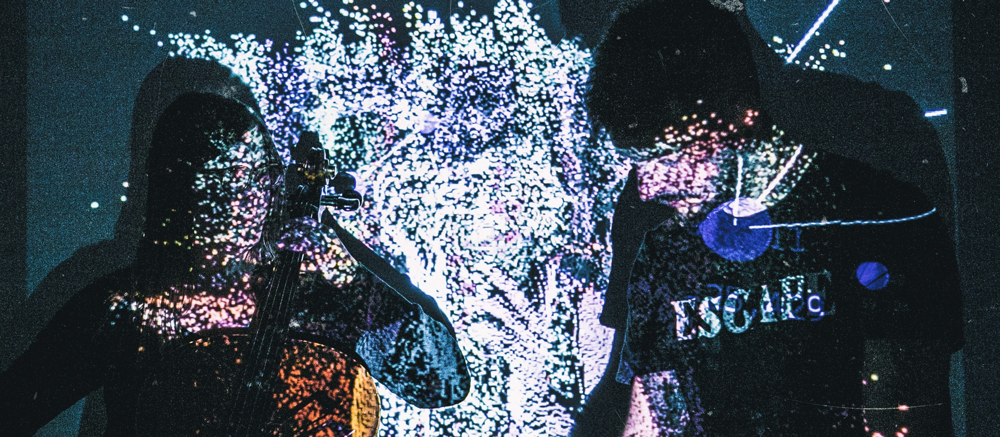

Una máquina Imposible

Cello y Live electronics
Proyecto de performance audiovisual, en la cual se ponen en diálogo dos artistas, a través de técnicas y materiales propios. Andrés Belfanti (live electronics) y Renata Bonamici (violoncello), desarrollan una narración incorporando técnicas de improvisación a partir de fragmentos pertenecientes al “archivo” personal de cada artista, generando un todo conformado colectivamente. El archivo sonoro, visual y musical (comprendido por imágenes, audio y fragmentos instrumentales), es repetido, superpuesto y transformado, en un proceso que lleva a la creación de un material nuevo, pero que a la vez produce una violencia sobre el original. En esta propuesta, la utilización de nuevas tecnologías y el trabajo sobre la imagen y el sonido, funciona como una promesa que se rompe o nunca llega a cumplirse. La “máquina imposible” es el dispositivo que se pone a andar, con la intención de realizar el rescate de la memoria. La performance termina por mostrar lo quimérico e irrepetible del ser humano y su recuerdo transformándolo en un recorrido sonoro-visual.